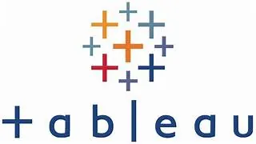
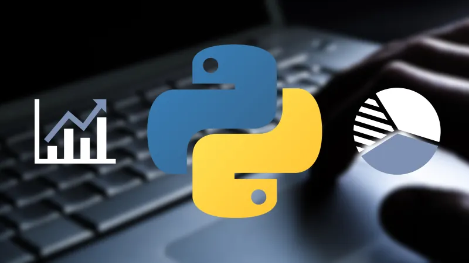

Client engagement/01
Hivo: Web Application Security Assessment
Real-client capstone engagement assessing web application security, documenting observations, and prioritizing risk.
Explore case studyHELLO, I'M DOMINIC ODUOR
Cybersecurity & IT professional combining practical security assessments, technical investigations, IT administration, and data-driven analysis to help organizations protect what matters.
01 / ABOUT
I hold a Master of Science in Information Technology – Cybersecurity from Capella University. My experience spans financial-services quality assurance and compliance, IT and security administration, technical support, and data analytics.
Through an external-client capstone and controlled cybersecurity labs, I have applied web security assessment methodologies, event and log analysis, incident-response workflows, network defense, and Windows access-control concepts.
I am especially interested in Security Operations, Vulnerability Management, Cyber Risk/GRC, and Identity & Access Management — where technical evidence and clear communication help teams make better security decisions.
02 / SELECTED WORK
Real-client assessment experience and carefully labeled academic labs. Select a focus area to explore.
05 SECURITY CASE STUDIES
04 ANALYTICS PROJECTS
Real-client capstone engagement assessing web application security, documenting observations, and prioritizing risk.
Explore case studyAcademic investigation workflow using Wazuh, TheHive, log evidence, triage, and response documentation.
Explore case studyDefense-in-depth lab work involving pfSense, firewall policies, VPN configuration, segmentation, and traffic monitoring.
Explore case studyAuthorized academic labs exploring exploitation concepts, packet capture, session behavior, and defensive implications.
Explore case studyWindows-focused labs covering firewall hardening, users and groups, NTFS permissions, and remote access.
Explore case studyA housing data-cleaning project using SQL to prepare and standardize records.
View original projectExploratory SQL analysis of publicly available COVID-19 data.
View original project
A published Tableau visualization of global COVID-19 trends.
View original project
A notebook-driven exercise exploring extraction and analysis of stock data.
View original projectNo projects found for this focus area.
Scope note: Hivo work is summarized without confidential client details. Lab exercises are explicitly labeled and are not presented as production security incidents.
03 / PROFESSIONAL FOUNDATION
Operational judgment, secure IT administration, quality assurance and data-driven problem solving.
Lisa Care Psychiatry
Support endpoint and account administration, secure connectivity, troubleshooting, documentation, and day-to-day technology operations for a growing healthcare practice.
AUTOPAY
Review high-volume financial workflows for quality and control adherence, investigate exceptions, handle sensitive consumer information, and collaborate across operational and technical teams. Applied SQL/Microsoft Access to streamline information retrieval.
Smart Data Analytic Inc.
Built business reporting and data analysis using SQL, Power BI, Tableau and Excel; translated requirements and findings for business stakeholders.
Concentrix
Troubleshot operating-system, application and device issues in a high-volume remote support environment.
04 / CAPABILITIES
Security monitoring, event analysis, incident triage, investigation documentation.
Vulnerability assessment, OWASP testing methods, risk evaluation and reporting.
Endpoint hardening, user access, firewall policies, network fundamentals and VPN.
Analytical problem solving, reporting, stakeholder communication and technical documentation.
05 / LEARNING & RECOGNITION
Capella University · Degree conferred June 2026
Capella University · Academic recognition
Per Scholas · Applied cybersecurity training
Moi University
06 / CONNECT
Open to cybersecurity, security operations, cyber risk and IT security opportunities. Based in Dallas–Fort Worth and open to relocation.